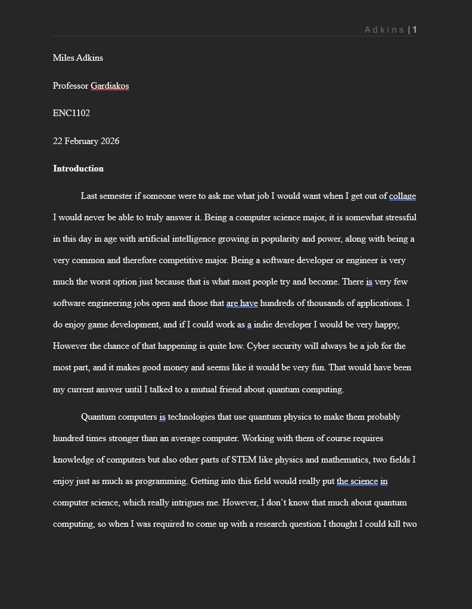

First draft of Final Research Paper
To your right is a link to my first draft of my Research paper, the only other
draft is the final draft which you can find on the Research Genre Production
section. It was very much a first draft, I barely got through everything and what I did
get through was mostly swapped around or completly redone for the final draft.
That first draft was very much done for the most part in one night but I learned my lesson
and will not procrastinate english homework until the very end. No you are not
allowed to look at when this is uploaded to the git hub page.
To more simply show what I changed as well as to use bullet points which I'm
supprised I havent used in any of my Eportfolios below is a list of 5 things
I changed about my first draft:
- I changed table to use checkmarks instead of just Yes.
- I explained what the table was about as well as what the informaton means.
- I added a breaf discription of what each source that I used for my primary research talked about.
- I went into more detail with each of the quantum computing consepts that I talked about in my article.
- *Most important* I talked about why each source talked about what they did and why they were different.

Peer Review of Final Research Paper
In class we had days that we had to bring in a draft for the peer review. The image above
was that peer review draft for my Situated Inquiry Research Paper. Now to your right
I have my peer's(probably best if I blot out their name, I didn't ask if I could use
it) responce to it. I used this as a little checklist so that I could see what I can
add and what I should change when I am looking and revising my article the second time.
Revision is the one SLO that both english 1 and english 2 share, and I shared
the same opinon there as I did before. I a really think that revision is one of
the most imporant parts of writing, or really anything you do. you can always do better.
When ever I make something, weither that is an article, a video game, ext. I am always
excited for people to experince what I make and for them to tell me what I could
imporve on, but also what they liked tied in.